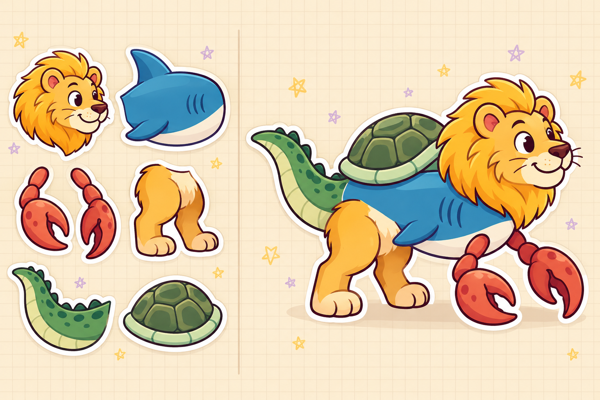
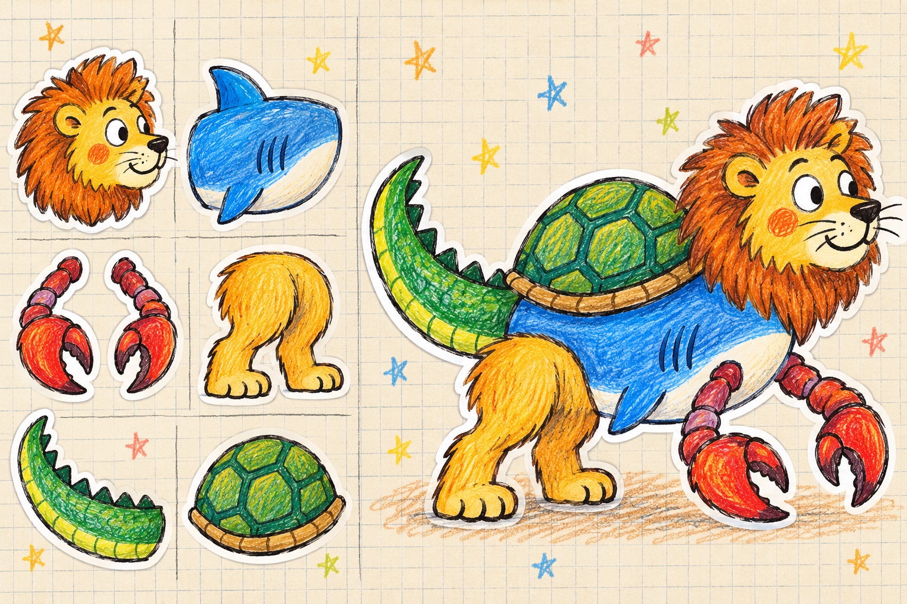
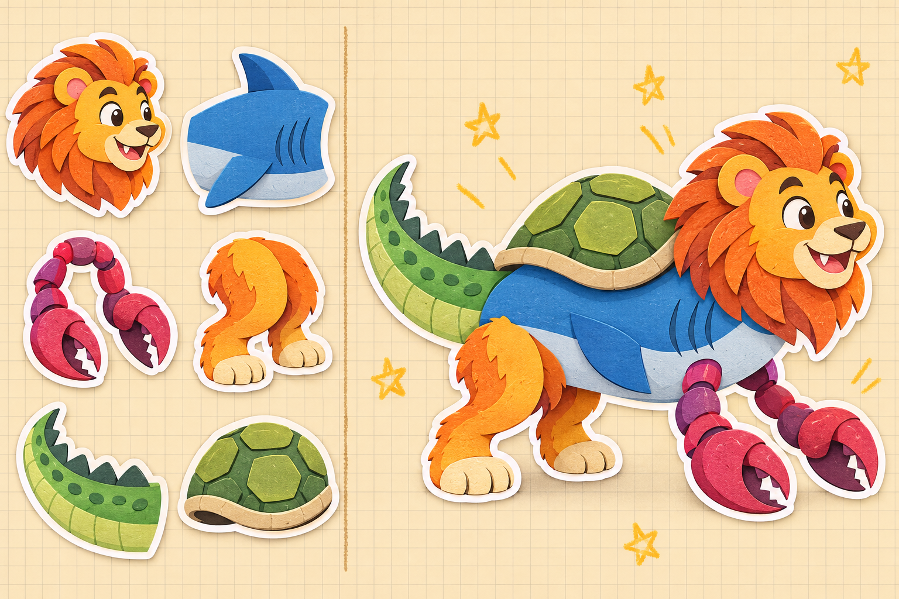

НейроФауна: три стикерных направления
В каждом варианте слева — отдельные наклейки, справа — существо после сборки. Состав одинаковый: лев, акула, клешни, лапы, хвост крокодила и панцирь. Это визуальные концепты для выбора стиля; финальные ассеты ещё не генерировались.
1 · Мультяшный стикерпак
Мягкие формы, яркие цвета, выразительная мордочка. Самый простой и читаемый вариант для маленьких экранов.

2 · Наклейки из тетради
Неровный контур, штриховка карандашом, ощущение собственноручного рисунка. Самый живой и характерный вариант.

3 · Бумажный коллаж
Фактура бумаги, многослойные вырезки и мягкая тень. Лучше всего передаёт ощущение физической сборки из наклеек.

Создано встроенным image_gen. Точные промпты. Согласование направления ещё открыто.